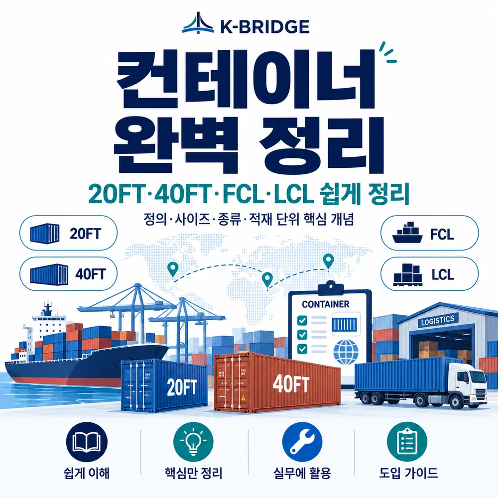
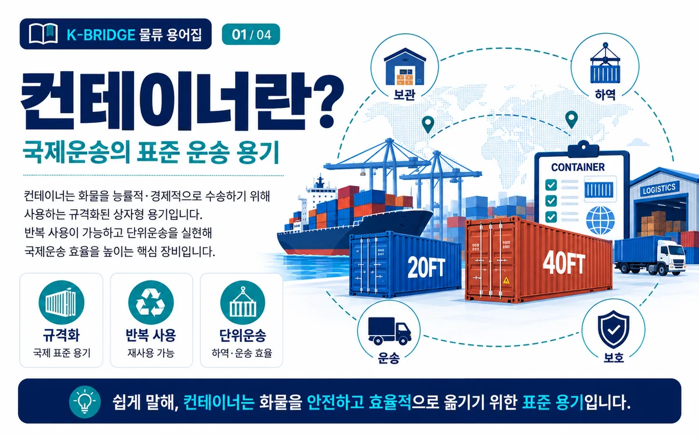
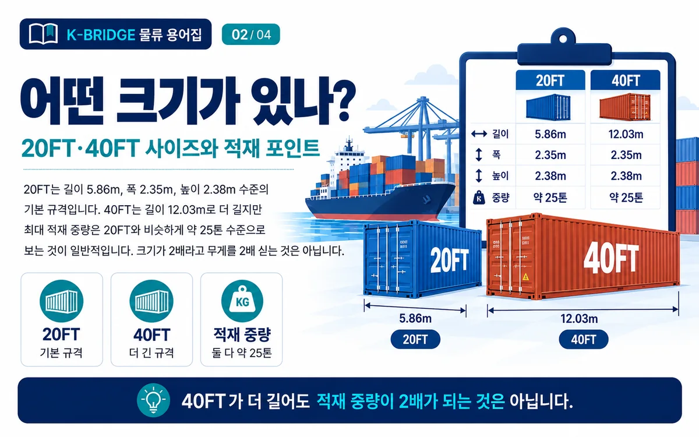
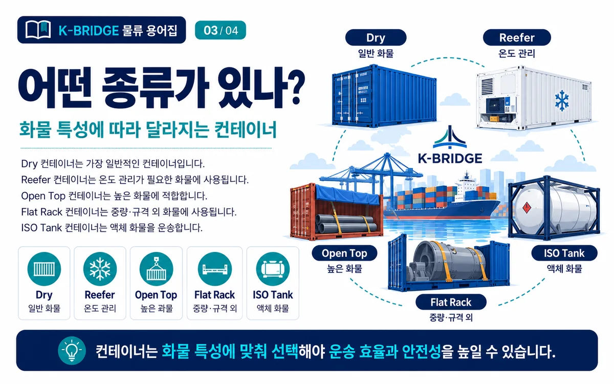
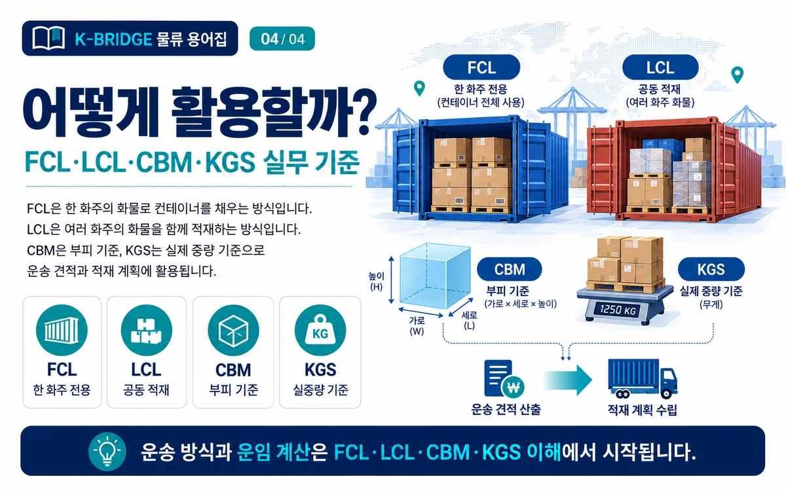

핵심 요약
컨테이너(Container)는 화물을 능률적·경제적으로 수송하기 위해 사용하는 규격화된 상자형 운송 용기입니다. 국제운송에서는 20FT와 40FT가 대표 규격으로 쓰이고, 적재 방식은 FCL과 LCL로 나뉩니다. 또한 운임과 적재 계획에서는 CBM(부피)과 KGS(실중량) 개념을 함께 이해해야 합니다.

컨테이너(Container)란?
컨테이너는 국제운송에서 화물을 표준화된 단위로 묶어 안전하고 효율적으로 이동시키기 위한 상자형 운송 용기입니다. 해상운송에서는 특히 반복 사용이 가능하고, 상·하역과 보관, 내륙운송을 연결하기 쉬워 물류비 절감과 작업 효율 향상에 큰 역할을 합니다.
사전적으로는 물건을 담는 견고한 용기이지만, 국제운송 실무에서는 규격화된 직육면체형 화물 운송 장비를 뜻합니다. ISO 등 국제 규격에 맞춰 제작되며, 다양한 화물 특성에 따라 일반용, 냉동용, 오픈탑, 플랫랙, 탱크형 등 여러 종류로 나뉩니다.
20FT·40FT 컨테이너 사이즈와 적재 포인트
20FT와 40FT는 가장 대표적인 해상 컨테이너 규격입니다. 일반적으로 20FT는 길이 5.86m, 폭 2.35m, 높이 2.38m 수준이고, 40FT는 길이 12.03m, 폭 2.35m, 높이 2.38m 수준입니다.
실무에서 자주 오해하는 부분은 40FT가 20FT보다 길이가 길다고 해서 적재 중량도 2배가 되는 것은 아니라는 점입니다. 일반적으로 20FT와 40FT 모두 최대 적재 중량은 약 25톤 수준으로 이해하는 경우가 많습니다. 즉, 40FT는 더 많은 부피를 활용하기 좋지만, 무거운 화물이라고 해서 무조건 40FT가 유리한 것은 아닙니다.
| 구분 | 길이 | 폭 | 높이 | 적재 중량(일반적 이해) |
|---|---|---|---|---|
| 20FT | 5.86m | 2.35m | 2.38m | 약 25톤 |
| 40FT | 12.03m | 2.35m | 2.38m | 약 25톤 |
주의: 실제 적재 가능 중량과 내부 사용 가능 치수는 선사, 컨테이너 자체 중량(Tare Weight), 화물 형태, 국가 규정에 따라 달라질 수 있으므로 선적 전 스펙 확인이 필요합니다.

컨테이너 종류는 어떻게 나뉠까?
컨테이너는 화물의 특성과 작업 방식에 따라 형태가 달라집니다. 가장 일반적인 것은 Dry Container이며, 그 외에도 온도 관리 화물을 위한 Reefer, 높은 화물 적재에 유리한 Open Top, 중량물·규격 외 화물에 쓰이는 Flat Rack, 액체 화물을 위한 ISO Tank 등이 있습니다.
Dry Container
가장 일반적인 컨테이너로, 별도의 온도 조절 없이 일반 화물을 운송할 때 사용합니다.
Reefer Container
냉동·냉장 기능이 있는 컨테이너로, 농수산물·식품·의약품처럼 온도 관리가 필요한 화물에 적합합니다.
Open Top / Flat Rack
천장이 열리거나 측벽이 제한적인 구조로, 높은 화물이나 중량물·장척물 적재에 활용됩니다.
ISO Tank
액체 화물을 운송하는 탱크형 컨테이너로, 화학제품·유류 등 액상 화물 운송에 사용됩니다.

FCL·LCL·CBM·KGS는 왜 중요할까?
컨테이너 실무에서는 적재 방식과 운임 산정 기준을 함께 이해해야 합니다. FCL은 한 화주의 화물로 컨테이너 한 대를 채우는 방식이고, LCL은 여러 화주의 화물을 하나의 컨테이너에 함께 적재하는 방식입니다.
또한 CBM은 부피 기준, KGS는 실제 중량 기준을 뜻합니다. 이 두 기준은 운송 견적, 적재 가능 여부, 혼재 화물 계산, 선적 계획 수립에 매우 중요합니다.

컨테이너 실무 체크포인트
- 1. 화물 특성 확인: 일반 화물인지, 온도 관리가 필요한지, 높이나 중량이 큰지에 따라 컨테이너 종류가 달라집니다.
- 2. 부피와 무게를 함께 검토: 40FT가 더 커 보여도 중량 제한은 비슷할 수 있으므로 CBM과 KGS를 동시에 확인해야 합니다.
- 3. FCL과 LCL 선택: 화물량, 납기, 비용, 혼재 가능 여부를 비교해 적합한 적재 방식을 정해야 합니다.
- 4. 내륙운송과 하역 조건 확인: 공장 상차, 창고 입고, 항만 반입, 도착지 하역까지 전체 작업 흐름을 함께 검토해야 예상치 못한 비용을 줄일 수 있습니다.
- 5. 선적 전 최종 스펙 확인: 실제 선사 장비 스펙, 허용 중량, 규제 조건, 특수화물 여부는 사전에 다시 체크하는 것이 안전합니다.
KEY TAKEAWAYS
이 글에서 기억할 것
- 20FT · 기본 규격 컨테이너
- 40FT · 길이는 더 길지만 중량은 비슷
- FCL · 한 화주 전용 적재
- LCL · 여러 화주 공동 적재
자주 묻는 질문
Q. 20FT와 40FT 중 어떤 컨테이너를 선택해야 하나요?
Q. 40FT는 20FT보다 무조건 2배 많이 실을 수 있나요?
Q. FCL과 LCL의 차이는 무엇인가요?
Q. Reefer Container는 어떤 화물에 사용하나요?
Q. CBM과 KGS는 왜 함께 확인해야 하나요?
컨테이너 운송, 화물 조건부터 정확히 확인하세요
KBRIDGE는 FCL·LCL 해상운송과 특수 컨테이너, 통관, 국내운송을 연결해 화물의 부피·중량·형태와 일정에 맞는 운송 방식을 검토합니다.